Product Optimization · Case 1
Fra gentagne data til relationer
Datamodellering · Relationer · Supabase REST API
RACE 1. september 2026
Åbn med den praktiske pointe: Vi starter i den Post App og det Supabase-interface, de allerede kender.
SQL-filerne etablerer demonstrationens tre tilstande, men de studerende skal ikke lære at skrive SQL i dag.
[Sources] - Dagens undervisningsside og lokale Post App-materialer [/Sources]
Velkommen · skema og ugeblik
Lad os lande ugen — og høre hvordan det går
Check-in
Hvor står du i Case 1?
Hvad fungerer allerede?
Hvor sidder du fast?
Hvad vil du gerne have hjælp til?
Del én kort status — der er ikke noget, som skal være færdigt endnu.
Eksamen
Case 1 er råmateriale til én af tre cases — ikke en færdig eksamenscase nu.
Samlet aflevering 16/10 kl. 12.00 · maksimalt fem normalsider i alt ↗
Tag en kort runde: Bed hver studerende sige, hvad der virker, hvad der fylder, og hvor vejledning vil gøre
størst forskel. Gennemgå derefter ugeblikket. Understreg, at Case 1 slutter som arbejdsperiode 4. september,
men at de nu samler dokumentation og råmateriale — ikke en færdig eksamenscase. [Sources] - Case 1 brief,
Race 05 og Race 06 · lokale kursusmaterialer - Race 05 i Canvas ·
https://eaaa.instructure.com/courses/30922/pages/race-product-optimization-case-1-star-datamodellering-relationer-og-supabase-01-09-2026-2
- Race 06 i Canvas ·
https://eaaa.instructure.com/courses/30922/pages/race-product-optimization-case-1-star-performance-lighthouse-og-videre-arbejde-02-09-2026
- Eksamensbeskrivelsen ·
https://eaaa.instructure.com/courses/30922/pages/product-optimization-eksamen-og-aflevering [/Sources]
Tilbageblik · Web App på 2. semester
Hvilke udfordringer havde I med at strukturere data?
01
Hvad hørte sammen?
Hvordan besluttede I, hvilke oplysninger der skulle ligge i samme model?
02
Blev data gentaget?
Var de samme oplysninger gemt flere steder i appen eller databasen?
03
Hvad var svært at ændre?
Var data vanskelige at opdatere, holde ens eller forbinde med hinanden?
Find ét konkret eksempel fra jeres egen Web App.
Uden user-data
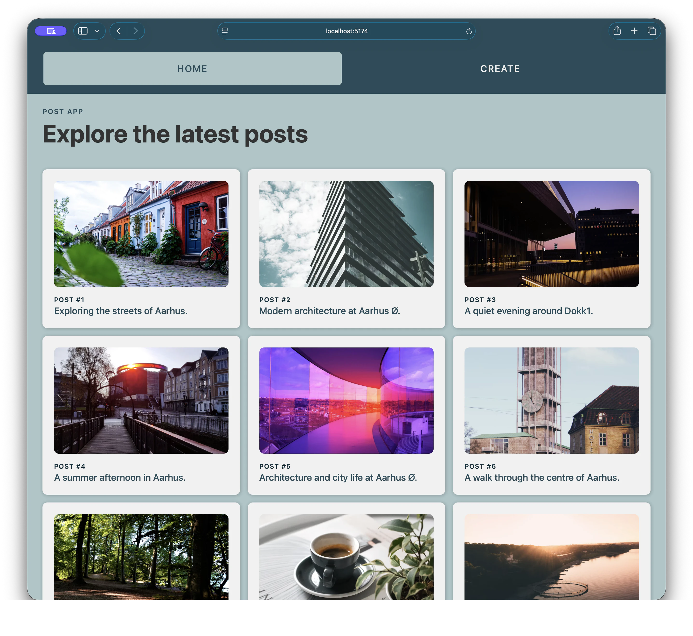
Med user på cardet
Hvilke nye data har vi brug for — og hvor skal de gemmes?
Lad dem først tale kort med en sidemakker og saml derefter et par konkrete eksempler i plenum. Undgå at
introducere primærnøgler, fremmednøgler eller normalisering endnu. Brug deres eksempler som overgang til
Post App. Brug de to billeder som et konkret skift i behovet: Først viser et card kun post-data; derefter
vil vi også vise user-data. Spørg, hvor de nye data bør gemmes, men vent med løsningen. [Sources] - Dagens
forberedelsesspørgsmål og undervisningsside · lokale kursusmaterialer - User-provided Post App screenshots
· slides/assets/post-app-posts.webp · slides/assets/post-app-posts-and-users.webp [/Sources]
01
Den Post App, I kender
Vi starter med
Én tabel. Enkel CRUD. Ingen user-data eller relationer endnu.
Knyt Post App til de eksempler, holdet lige har delt. Lad dem beskrive, hvilke data de kan se. Brug derefter
SQL 01 som bagvedliggende opsætning og åbn modellen i Supabase. [Sources] - User-provided Post App
screenshot · slides/assets/post-app-posts.webp -
undervisning/product-optimization/post-app-sql/01-posts.sql [/Sources]
Trin 1 · posts
Alle kolonner beskriver selve postet
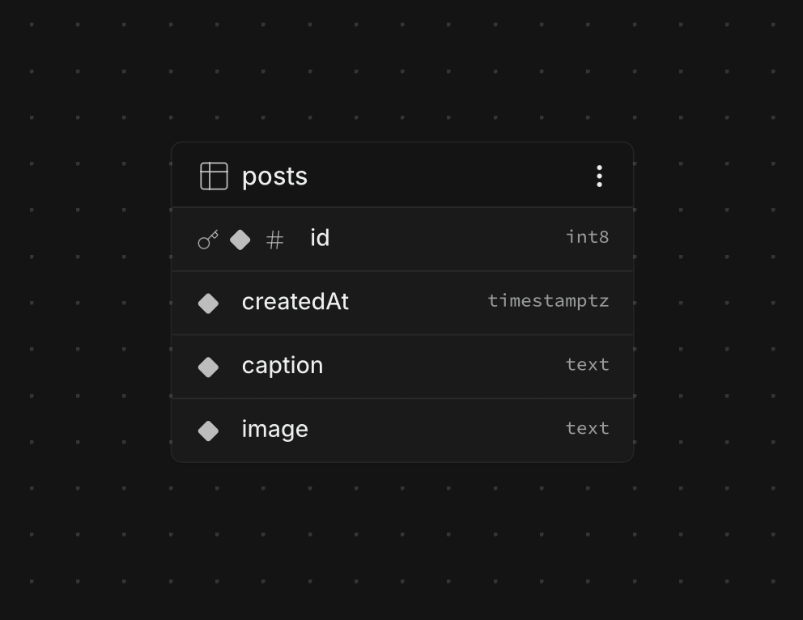
Supabase Schema Visualizer
Én række er ét post
Tabellen indeholder endnu kun oplysninger om selve postet.
Hvilke oplysninger mangler, hvis vi også vil vise, hvem der har lavet postet?
Lad dem læse modellen fra Supabase: Kolonnerne beskriver postet. Nøgleikonet kan nævnes som “det unikke
nummer” uden at definere primærnøgle endnu. [Sources] - User-provided Supabase Schema Visualizer screenshot
· slides/assets/posts.png - undervisning/product-optimization/post-app-sql/01-posts.sql [/Sources]
Trin 1 · Behovet opstår
Vi vil også vise, hvem der har lavet postet
På hvert card vil vi vise
userImageBrugerens billede
userNameBrugerens navn
userTitleBrugerens titel
UI’et viser, hvilke data vi har brug for
Men hvor skal brugerdataene gemmes?
Vis først det ønskede resultat uden at forklare datamodellen bag det. Nu har vi et konkret behov: Cardet
skal kunne vise userens billede, navn og titel. Spørg de studerende, hvor de ville gemme oplysningerne med
den simple posts-tabel, de allerede kender. Det leder naturligt til den hurtige løsning på næste slide.
[Sources] - User-provided Post App screenshot · slides/assets/post-app-posts-and-users.webp [/Sources]
Trin 2 · postsWithUserData
Den hurtige løsning er at gemme user-data på hvert post
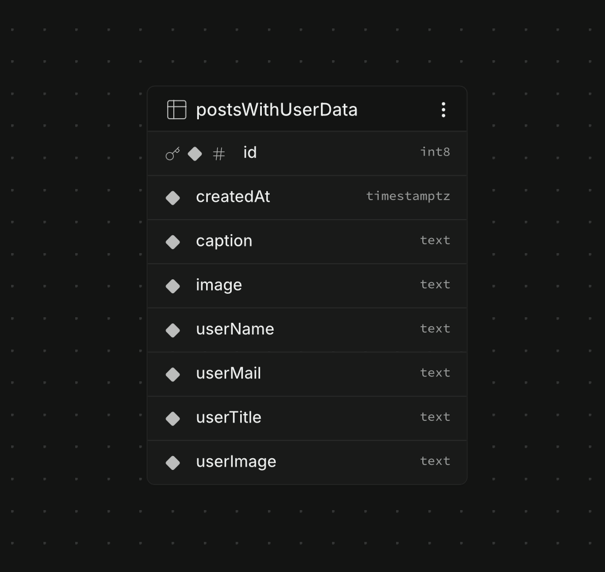
Post captionimage
User userNameuserMailuserTitleuserImage
Det virker i UI’et — men user-data bliver kopieret til hvert post.
Vis SQL 02-resultatet i Supabase, ikke SQL-koden. Lad de studerende selv udpege postfelter og brugerfelter.
Pointen er, at løsningen virker i UI’et. [Sources] - User-provided Supabase Schema Visualizer screenshot ·
slides/assets/posts-with-user-data.png -
undervisning/product-optimization/post-app-sql/02-posts-with-duplicated-user-data.sql - Post App branch ·
https://github.com/cederdorff/post-app-supabase/tree/posts-with-duplicated-user-data [/Sources]
Problemet bliver synligt
Den samme bruger er nu gemt tre gange
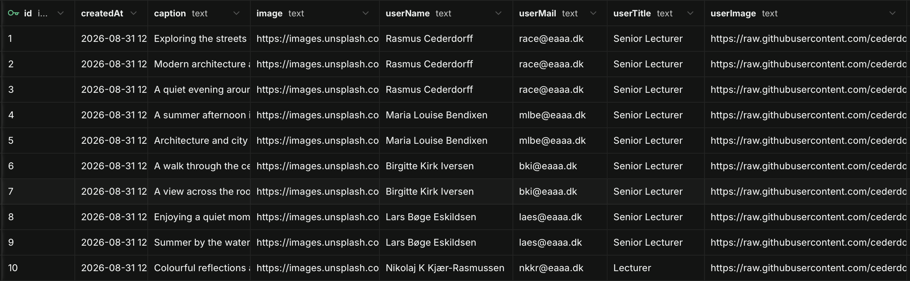
Samme user · 3 rækker
Rasmus får en ny titel Hvor mange rækker skal ændres? 3
Peg på de første tre rækker i den rigtige Table Editor: postets indhold er forskelligt, men Rasmus’ navn,
mail og titel er identiske kopier. Ret eventuelt titlen på kun én række og vis inkonsistensen i appen. Det
gør problemet konkret, før ordet normalisering introduceres. [Sources] - User-provided Supabase Table Editor
screenshot · slides/assets/posts-with-user-data-table.png - SQL 02 og Post App duplicated branch · lokale
undervisningsmaterialer [/Sources]
Kort øvelse · 2 minutter
Placér felterne: Hører de til et post eller en user?
caption
post image
createdAt
name
mail
title
user image
Post Placér postets data her User Placér userens data her
Bonus: Hvordan kan et post pege på den rigtige user uden at kopiere user-data?
Lad de studerende arbejde to og to i cirka to minutter. De skal først placere de syv felter og derefter
foreslå en måde at forbinde et post med en user. Accepter hverdagssprog som nummer, id eller reference.
Saml deres forslag mundtligt, og gå videre til relationskapitlet uden at vise en facitliste. [Sources] -
SQL 02 og SQL 03 · lokale undervisningsmaterialer [/Sources]
02
Et bedre hjem til data
To tabeller —
Brugerdata har fået ét hjem. Postet skal stadig kunne finde sin user.
Lad spørgsmålet stå et øjeblik, før du viser forbindelsen. Skift derefter til SQL 03-resultatet i Supabase
og vis users og posts. [Sources] - undervisning/product-optimization/post-app-sql/03-posts-and-users.sql
[/Sources]
Trin 3 · users + posts
Brugeren gemmes én gang — postet gemmer kun forbindelsen
posts.userId→ users.idRet Rasmus’ titel én gang i users — alle hans posts får den samme værdi
Følg linjen visuelt fra posts.userId til users.id. Læs forbindelsen som almindeligt sprog, og vent med de
formelle navne. Ret eventuelt Rasmus’ titel i users og genindlæs appen: Alle hans posts viser nu den nye
titel. Det er forløsningen på spørgsmålet om de tre ændringer. [Sources] - User-provided Supabase Schema
Visualizer screenshot · slides/assets/posts-and-users.png - SQL 03 · lokalt undervisningsmateriale
[/Sources]
Tre nøgler i almindeligt sprog
ID’er gør rækker unikke — og forbinder dem
users.idBrugerens eget unikke nummer Identificerer én række i users
posts.idPostets eget unikke nummer Identificerer én række i posts
posts.userIdNummeret på den user, postet tilhører Har samme værdi som den relaterede users.id
Først forståelsen → så relationen → de faglige ord kommer om lidt
Hold fortsat sproget konkret: eget nummer og nummeret på den relaterede user. Vent med primærnøgle,
fremmednøgle og normalisering til Supabase-slidet. [Sources] - Supabase Tables and Data ·
https://supabase.com/docs/guides/database/tables [/Sources]
En-til-mange
Én user kan have mange posts
RC users.id = 1 Rasmus Cederdorff
1 → mange
Post #1 userId = 1 Post #2 userId = 1 Post #3 userId = 1
Hvert post tilhører én user. Den samme user kan være forbundet med flere posts.
Peg begge veje: fra user til mange posts og fra hvert post tilbage til én user. [Sources] - SQL 03 og
Supabase joins/nesting documentation · https://supabase.com/docs/guides/database/joins-and-nesting
[/Sources]
Se relationen i Supabase
Nu kan vi sætte faglige ord på modellen
Table Editor
Rækker og værdier
id caption userId
1 Aarhus 1
2 Aarhus Ø 1
Kontrollér værdien i hver række
Schema Visualizer
Tabeller og forbindelser
users 1 ───── ∞ posts
Kontrollér relationens retning
Nu har vi ordene: users.id er primærnøglen · posts.userId er
fremmednøglen · opdelingen kaldes normalisering
Demonstrér relationen i det interface, de kender. Introducér først nu ordene primærnøgle, fremmednøgle og
normalisering som navne på det, de allerede har set. Normalisering betyder her, at data er delt, så den
samme brugeroplysning ikke skal gemmes flere steder. [Sources] - Supabase Tables and Data ·
https://supabase.com/docs/guides/database/tables - SQL 03 · lokalt undervisningsmateriale [/Sources]
Primærnøglen identificerer én række
Et godt ID ændrer sig ikke, når brugeren gør
Ikke en sikker identitet
nameRasmus Cederdorff To users kan have samme navn
mailrace@eaaa.dk Mailadressen kan ændre sig
→
Primærnøgle
users.id = 1
Unik · altid til stede · stabil
Supabase kan generere nummeret, når rækken oprettes
Primærnøgle: feltet, der entydigt identificerer én bestemt række i tabellen.
Brug navn og mail som konkrete modeksempler. Et navn er ikke nødvendigvis unikt, og en mailadresse kan
ændres. ID’et har kun én opgave: at fastholde rækkens identitet. I vores tabeller er id genereret
automatisk. [Sources] - SQL 03 · lokalt undervisningsmateriale - Supabase Tables and Data ·
https://supabase.com/docs/guides/database/tables [/Sources]
Fremmednøglen forbinder tabeller
userId er både en værdi og en regel
users
id name
1Rasmus
2Maria
posts.userId = 1✓ User 1 findes
posts.userId = 2✓ User 2 findes
posts.userId = 99× User 99 findes ikke
Fremmednøgle: et felt, hvis værdi skal pege på en eksisterende primærnøgle i en anden
tabel.
Fremmednøglen er mere end vores egen navngivningsaftale. Databasen kontrollerer, at den refererede user
findes, og forhindrer dermed et post uden en gyldig ejer. I SQL 03 er userId desuden NOT NULL, så hvert post
skal have en user. Undgå at gå videre til cascade-regler på denne slide. [Sources] - SQL 03 · lokalt
undervisningsmateriale - PostgreSQL Foreign Keys ·
https://www.postgresql.org/docs/current/ddl-constraints.html#DDL-CONSTRAINTS-FK [/Sources]
Supabase · trin 1
Opret users direkte i Supabase-interfacet
Database → Tables → New table
1 Navngiv tabellen users
2 Behold id som int8 og Primary
3 Tilføj name, mail, title og image som
text
createdAt er valgfri på en user og indgår ikke i vores model.
Udgangspunkt: I har allerede en posts-tabel med eksisterende posts. Vi udvider
modellen — vi starter ikke forfra.
Gør først forudsætningen tydelig: Projektet har allerede en posts-tabel med de posts, Post App viser. Vi
bevarer tabellen og dens data og tilføjer nu users samt forbindelsen mellem dem. Behold det genererede id;
Supabase giver hver ny user sit eget unikke nummer.
Demonstrér dette i Database → Tables, ikke i SQL Editor. Peg på de samme områder i screenshot’et: tabelnavn,
id-kolonnen og userens fire felter. Screenshot’et viser også createdAt; det er valgfrit og er ikke en del af
vores users-model. Opret users først, fordi posts om lidt skal pege på users.id. RLS-feltet er
adgangskontrol og ikke fokus for denne forklaring. [Sources] - User-provided Supabase screenshot ·
slides/assets/create-user-table.png - Supabase Tables and Data ·
https://supabase.com/docs/guides/database/tables [/Sources]
Supabase · trin 2
Tilføj mindst én user, som posts kan pege på
Database → Tables → users → Insert → Insert row
Udfyld userens fire felter
name · mail · title · image
Lad id stå tomt Supabase genererer nummeret, når du vælger Save.
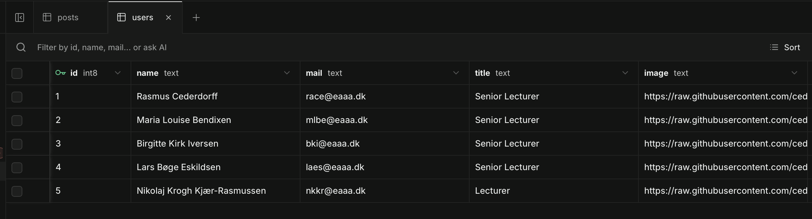
Efter Save har hver user sit eget genererede id.
Testdata:
users.json ↗
Brug name, mail, title og image — ikke id.
Åbn users i Table Editor, vælg Insert → Insert row, og indtast én konkret user. Lad id stå tomt, så Supabase
genererer værdien. Hvis tabellen har createdAt, behold default-værdien. Gem gerne Rasmus og Maria, så flere
relationer kan afprøves bagefter. Testdata kan kopieres fra users.json, men filens tekstbaserede id-værdier
skal udelades, fordi Supabase selv genererer vores int8-id. Det centrale er, at user-rækkerne skal findes,
før posts kan få deres userId. [Sources] - User-provided Supabase screenshots ·
slides/assets/supabase-insert-user.png · slides/assets/supabase-users-filled.png - Testdata ·
https://raw.githubusercontent.com/cederdorff/race/refs/heads/master/data/users.json - SQL 03 seed data ·
lokalt undervisningsmateriale - Supabase Tables and Data ·
https://supabase.com/docs/guides/database/tables [/Sources]
Supabase · trin 3
Opret userId — og gør kolonnen til en fremmednøgle
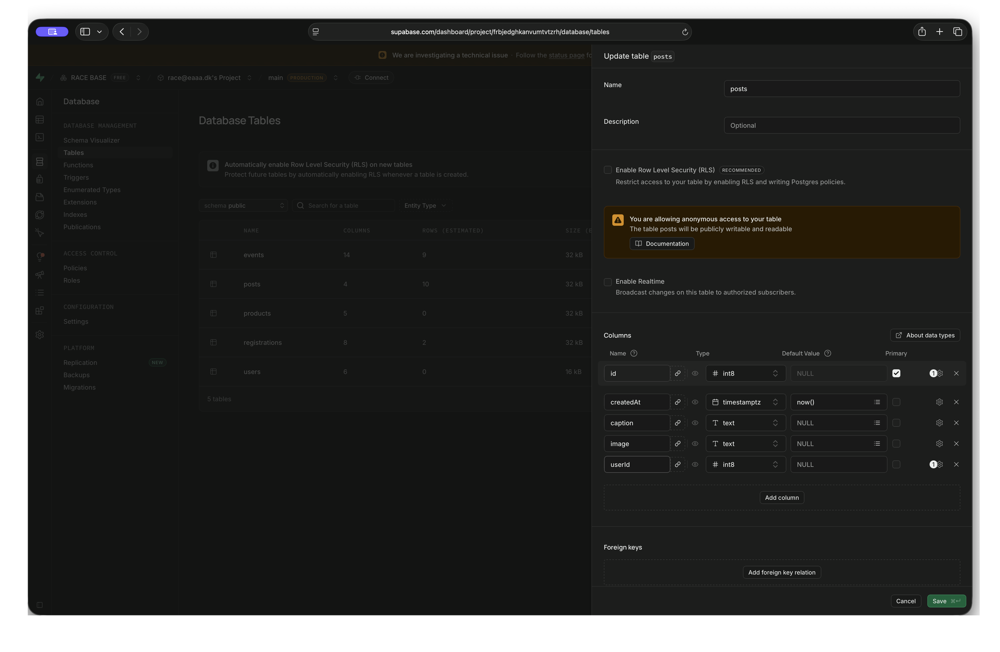
1 Opret posts.userId som en almindelig int8-kolonne
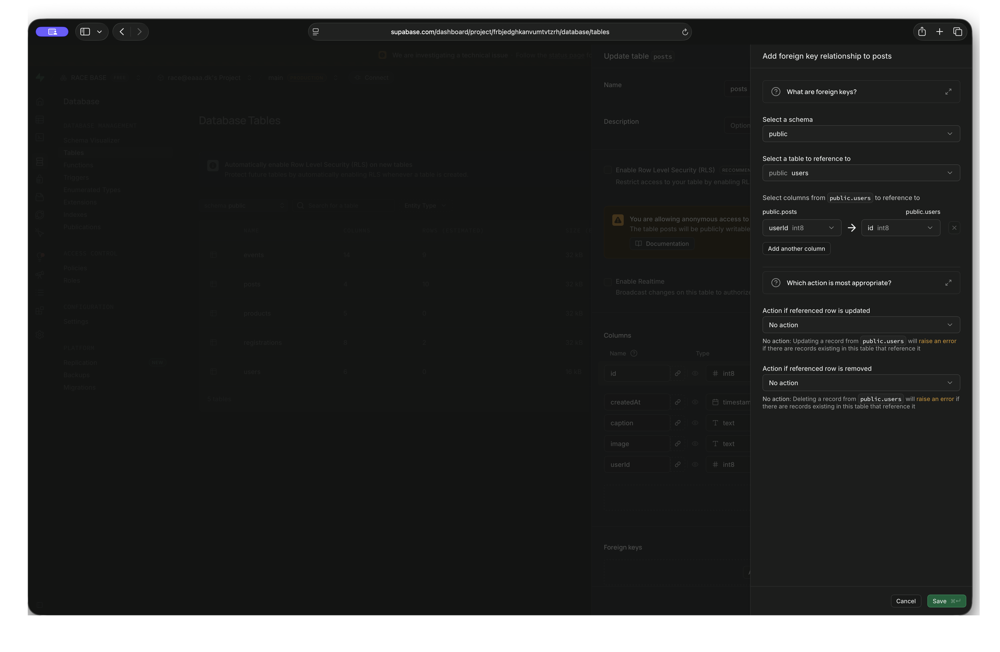
2 Vælg Add foreign key relation → public.users.id
Kolonnen gemmer userId = 1
+
Fremmednøglen kontrollerer Findes 1 i users.id?
Redigér posts i Table Editor: Vælg Add column, kald kolonnen userId, og vælg int8 — samme datatype som
users.id. Vælg derefter Add foreign key relation, og sæt referenced schema til public, referenced table til
users og referenced column til id. Gem ændringen. Kolonnen gemmer brugerens id på postet; fremmednøglen er
databasens regel om, at værdien skal findes i users.id. Derfor kan et post ikke pege på en user, som ikke
findes. Ordlyden i Dashboard kan ændre sig lidt; de skal lede efter relation/foreign key i kolonnens
indstillinger. [Sources] - User-provided Supabase
screenshots · slides/assets/supabase-add-user-id-column.png · slides/assets/supabase-create-foreign-key.png
- Supabase Tables and Data · https://supabase.com/docs/guides/database/tables [/Sources]
Supabase · trin 4
Relationen findes — men gamle posts er endnu ikke forbundet
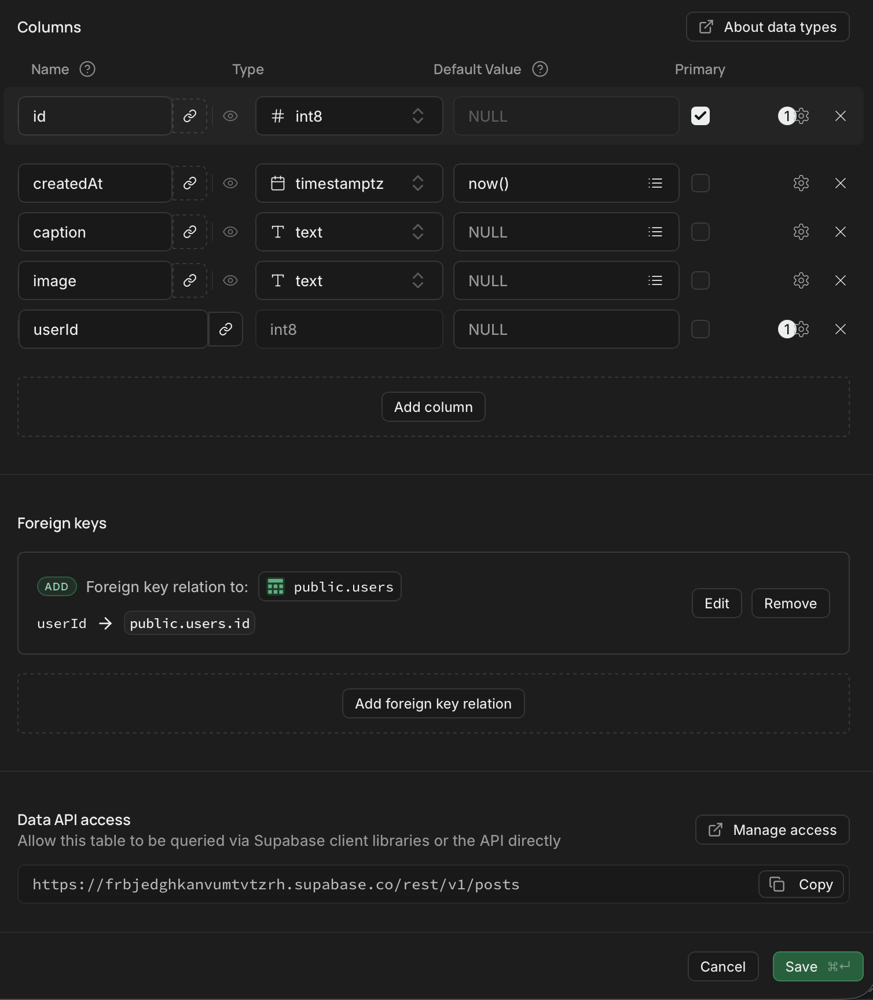
1 Relationen er gemt som en regel i tabellen
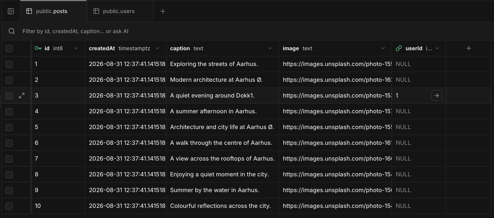
2 Kun posts med en userId er forbundet med en user
En relation udfylder ikke gamle rækker automatisk. NULL betyder, at postet endnu
ikke peger på en user.
Skeln mellem strukturen og dataene: Foreign key-reglen findes nu, men de eksisterende postrækker har stadig
ingen userId. Screenshot’et til højre viser mellemtilstanden, hvor ét post er forbundet, mens resten stadig
har NULL. Det skaber behovet for næste trin. [Sources] - User-provided Supabase screenshots ·
slides/assets/supabase-foreign-key-created.png · slides/assets/supabase-post-with-user-id.png - Supabase
Tables and Data · https://supabase.com/docs/guides/database/tables [/Sources]
Supabase · trin 5
Forbind derefter de eksisterende posts med en user
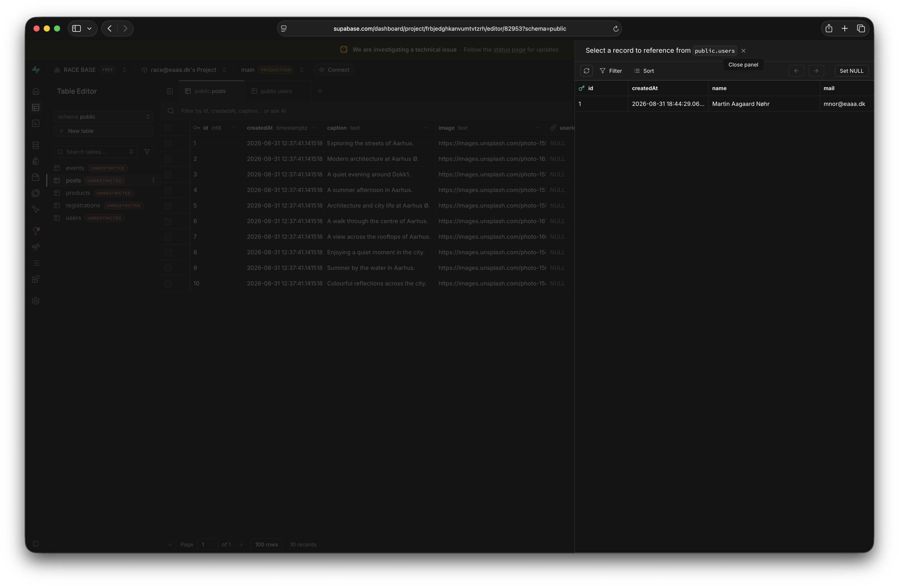
1 Klik i userId og vælg en række fra users
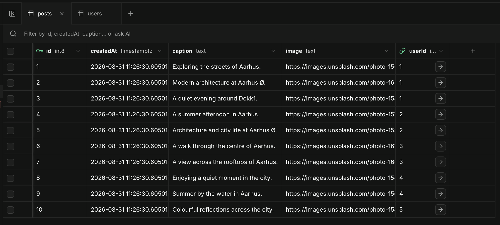
2 Hvert post gemmer kun den relevante userId
Rækkefølgen betyder noget: En fremmednøgle kan kun pege på en række, der allerede findes.
Lad eventuelt de studerende prøve userId 99 på en test-række og læse fejlbeskeden. Ret derefter værdien til
et eksisterende id. Det gør fremmednøglens regel konkret uden SQL. [Sources] - User-provided Supabase
screenshots · slides/assets/supabase-select-related-user.png · slides/assets/supabase-posts-linked.png -
Supabase Tables and Data · https://supabase.com/docs/guides/database/tables - SQL 03 · lokalt
undervisningsmateriale [/Sources]
Supabase · trin 6
Kontrollér modellen tre steder
Table Editor Findes rækkerne? Har hver post det forventede userId?
Schema Visualizer Kan du se linjen? Går den fra posts.userId til users.id?
Post App Vises den rigtige user? Matcher flere posts den samme user?
userId = 1✓ virker userId = 99× afvises
Hvis rækkerne findes, men appen ikke kan hente dem, kan problemet være adgangspolitikker — ikke relationen.
Verificér først data, så model, så UI. Hvis REST-requestet fejler eller returnerer tomt, selv om rækkerne
findes, så kontrollér projektets eksisterende RLS/policies sammen med den studerende. RLS er adgangskontrol
og ikke dagens relationsemne. [Sources] - Supabase Tables and Data ·
https://supabase.com/docs/guides/database/tables [/Sources]
Test hele progressionen
Se modellerne ved at køre de tre SQL-filer
Sådan får du dem op at køre
Opret et tomt Supabase-testprojekt.
Åbn SQL Editor → New query .
Kopiér hele fil 01, indsæt den, og vælg Run .
Se modellen i Table Editor. Gentag med fil 02 og 03.
RLS: Lad det være slået fra på øvelsestabellerne.
Brug et testprojekt: Filerne sletter og genopretter tabeller — kør dem ikke oven i
Mellemrum.
Dette er en frivillig genvej til at undersøge de tre modeller. SQL er her et installationsværktøj, ikke et
læringsmål. Lad de studerende stoppe efter hver fil og se ændringen i Table Editor. Fil 03 erstatter posts
med den relationelle model. RLS skal forblive slået fra i denne afgrænsede undervisningstest, så tabellerne
kan tilgås med projektets anon key. [Sources] - SQL-filer i undervisningsrepoet ·
https://github.com/cederdorff/mdu-e25ixd/tree/main/undervisning/product-optimization/post-app-sql
[/Sources]
03
Fra relation til React
Supabase samler data
Databasen er delt op. UI’et kan stadig få post og user sammen.
Overgangen er vigtig: normalisering betyder ikke, at React skal lave to separate requests. Supabase kan
bruge fremmednøglen til et indlejret response. [Sources] - Supabase Querying Joins and Nested Tables ·
https://supabase.com/docs/guides/database/joins-and-nesting [/Sources]
Start enkelt
Bed om posts — og indlejr den relaterede user
/posts?select=*,user:users(*)
*Alle felter fra posts
user:Kald det indlejrede objekt user
users(*)Alle felter fra den relaterede user
Se URL, statuskode og response i Network-panelet.
Skriv queryen trinvist i browseren eller koden. Aliaset user bestemmer navnet i JSON-responsen. [Sources] -
Supabase Querying Joins and Nested Tables · https://supabase.com/docs/guides/database/joins-and-nesting -
Post App branch · https://github.com/cederdorff/post-app-supabase/tree/posts-and-users [/Sources]
Responsen får en ny form
Postet indeholder nu et indlejret user-objekt
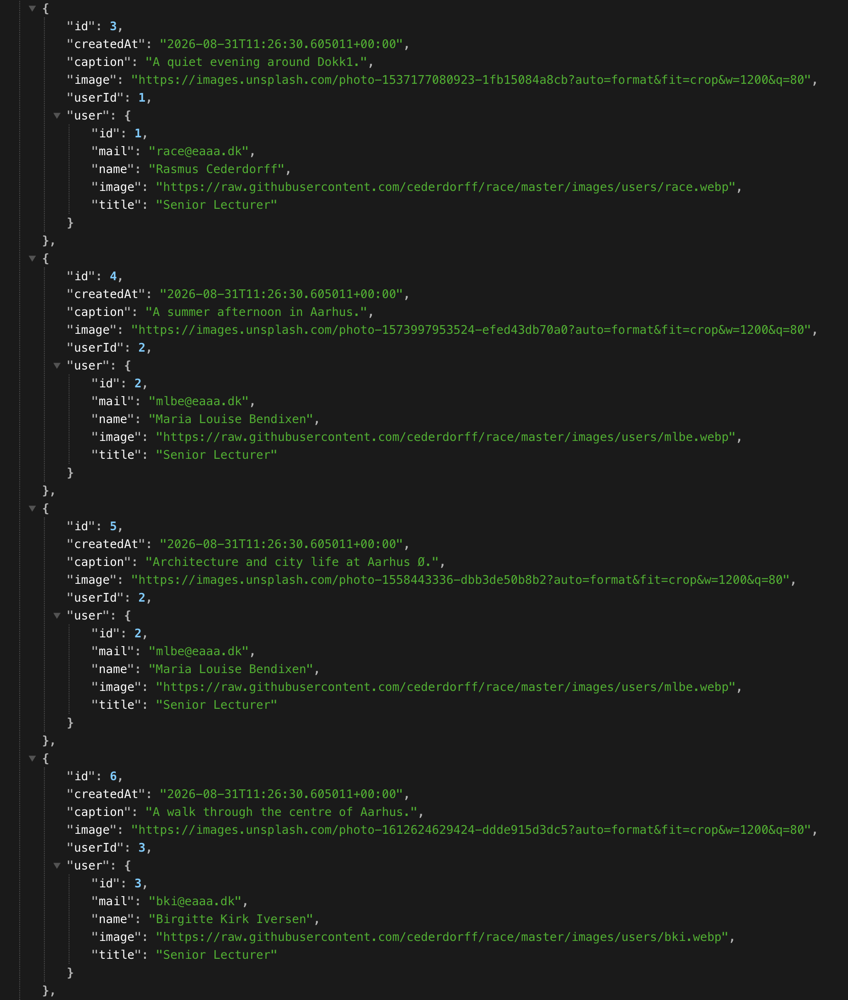
user-objekt user-objekt
Hvert post får sit relaterede user-objekt i responsen
Relationen bruges her userId: 1→ user: { … }Fremmednøglen forbinder rækkerne. Supabase former responsen.
Peg på forskellen mellem det, der er gemt i posts-tabellen, og det Supabase returnerer. user-objektet er
ikke kopieret ind i post-rækken. [Sources] - User-provided REST screenshot ·
slides/assets/supabase-rest-posts-with-nested-users.png - Supabase Querying Joins and Nested Tables ·
https://supabase.com/docs/guides/database/joins-and-nesting [/Sources]
Test i browseren
Åbn de fire responses — og sammenlign første post
01
Posts · udgangspunktet
{ id, createdAt, caption, image }
02
Posts · gentagne user-data
{ …, userName, userMail, userTitle, userImage }
03
Posts · relationen er gemt
{ …, userId }
04
Posts + users · relationen bruges
{ …, userId, user: { … } }
Undersøg:
Hvilke data er gemt direkte på postet?
Hvornår dukker user-objektet op?
Lad de studerende åbne hvert link og folde det første objekt ud. Bed dem først beskrive det, de ser, uden
fagbegreber. Sæt derefter ordene gentagelse, userId og relation på forskellene. Alle fire test-endpoints
returnerede 10 posts ved verifikation 1. september 2026. [Sources] - User-provided Supabase REST endpoints ·
https://frbjedghkanvumtvtzrh.supabase.co/rest/v1/posts ·
https://iizvlazxghmlvnutvqsz.supabase.co/rest/v1/postsWithUserData ·
https://iizvlazxghmlvnutvqsz.supabase.co/rest/v1/posts [/Sources]
Når relationen virker
* kan erstattes med de felter, UI’et faktisk bruger
Start her /posts?select=*,user:users(*)Let at læse og god til at forstå relationen
→
Udvælg derefter /posts?select=id,createdAt,caption,image,userId,Mindre response og en tydelig kontrakt til UI’et
Feltudvælgelse er en forbedring — ikke en forudsætning for at forstå relationen.
Branchens kode beholder den enkle query. Brug denne slide til at vise, hvordan man kan afgrænse felter, når
relationen er forstået. [Sources] - Supabase Data REST API · https://supabase.com/docs/guides/api - Dagens
undervisningsside · lokalt kursusmateriale [/Sources]
React følger dataformen
Flade kopier bliver til et relateret objekt
Før · kopier på postet
post.userName
post.userTitle
post.userImageBrugeroplysningerne ligger direkte på hvert post
→
Efter · relateret user
post.user.name
post.user.title
post.user.imageBrugeroplysningerne kommer fra det indlejrede user-objekt
UI’et ligner sig selv. Det er datastrukturen bag det, der er blevet bedre.
Sammenlign PostCard på de to branches. Hold fokus på dataformen, ikke styling eller komponentarkitektur.
[Sources] - Post App duplicated branch ·
https://github.com/cederdorff/post-app-supabase/tree/posts-with-duplicated-user-data - Post App normalized
branch · https://github.com/cederdorff/post-app-supabase/tree/posts-and-users [/Sources]
Når et post oprettes
Gem forbindelsen — ikke en ny kopi af brugeren
Før
{
caption,
image,
userName: "Rasmus…",
userMail: "race@…",
userTitle: "Senior Lecturer",
userImage: "…"
}
→
Efter
const CURRENT_USER_ID = 1;
{
caption,
image,
userId: CURRENT_USER_ID
}Simulerer den indloggede bruger
Update ændrer postets caption og image — ikke hvem postet tilhører.
Forklar, at hardcoding kun simulerer en aktuel bruger, fordi auth ikke er dagens emne. Den centrale pointe
er, at Create kun gemmer userId. [Sources] - Post App branches ·
https://github.com/cederdorff/post-app-supabase [/Sources]
04
Overfør princippet
Find dataenes hjem
Start med jeres eksisterende tabeller og de gentagelser, I allerede kan se.
Skift fra demonstration til de studerendes eget projekt. De skal ikke kopiere Post App-modellen; de skal
bruge samme spørgsmål på Mellemrum. [Sources] - Case 1 og dagens undervisningsside · lokalt kursusmateriale
[/Sources]
Tre ting i domænet
Hvilke oplysninger beskriver hvad?
Venue
Stedet
navn · adresse · by · billede
Event
Arrangementet
titel · dato · beskrivelse · venueId
Registration
Tilmeldingen
navn · mail · eventId
venues.id ← events.venueId · events.id ← registrations.eventId
Felterne er en model til samtalen, ikke en facitliste til alle implementationsdetaljer. Lad holdet
sammenligne med deres eksisterende Supabase-tabeller. [Sources] - Dagens undervisningsside og Mellemrum
starterprojekt · lokale kursusmaterialer [/Sources]
Arbejd nu i Mellemrum
Modellér én relation, før I ændrer hele løsningen
01 Find gentagelsen Hvilke oplysninger ligger flere steder?
02 Placér data Hvilken tabel bør eje hver oplysning?
03 Forbind med ID Hvilken fremmednøgle mangler?
04 Hent relationen Kan response ses i Network?
Opsummér i auditten
Problem · model · status · næste skridt · verifikation
Det forventes ikke, at hele datamodellen er migreret i dag. De skal kunne forklare deres model og have
begyndt en sikker implementering. Bevar eksisterende kolonner, indtil relationen og UI’et virker. [Sources]
- Dagens undervisningsside og audit-skabelonen · lokale kursusmaterialer [/Sources]
Dagens centrale pointe
Gem hver oplysning ét sted — og forbind resten med ID’er
Gentagelse → Find ejeren → Del tabellerne → Forbind med ID → Hent relationen
Brug nu samme blik på venues, events og registrations i Mellemrum.
Afslut med at lade et par studerende forklare forskellen på posts.id, users.id og posts.userId med egne ord.
[Sources] - Dagens undervisningsside · lokalt kursusmateriale [/Sources]